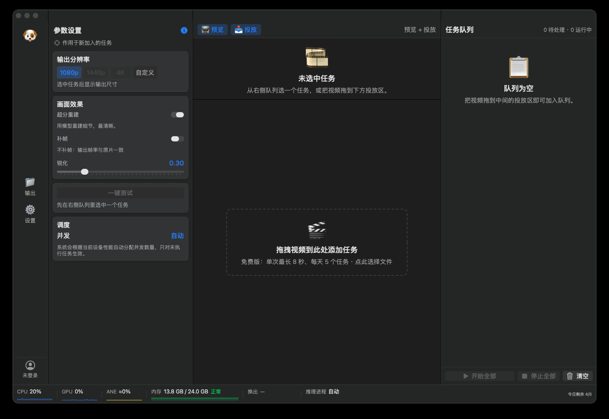

Mac 原生 · 全部在本机跑完
8 秒的素材，
值得一个 4K 的成片。
AI 视频平台给你的多半是 720p，这里能直接做到 2K，Pro 再往上到 4K。 所有推理都在本机完成，素材不进云端、不上传、不排队，拖进来就开工。
同一帧、同一区域 · 左为 720p 原片放大，右为超分后 2K 1:1 像素
拖动查看
原片 · 720p
成片 · 2K
素材来自一条真实短片：第 2 秒，船帆与索具区域。左侧为 720p 源片该区域放大到 2K 屏幕的观感，右侧为经本 App 超分到 2560×1440 后的成片同区域，按 1:1 像素呈现。
4K
最高输出 3840×2160
本机
素材不离开这台 Mac
8 秒
免费版单次上限
0 水印
免费版与 Pro 同画质
一整块参数面板，没有向导，没有弹窗
左侧参数、中间预览与投放、右侧队列，底部一条实时硬件指标。跑任务的时候你会想知道 GPU 在不在干活，这里写着。

左 参数面板，选中任务后只作用于该任务
中 处理前 / 处理后双画面对照
右 任务队列与断点续跑
底 CPU / GPU / ANE / 内存实时指标
免费版能干什么，写清楚
不玩"免费试用七天然后处处受限"那一套。免费版长期可用，限制就三条。
| 能力 | 免费版 | Pro |
|---|---|---|
| 任务数 | 每 5 小时 5 个（滚动窗口） | 不限 |
| 单次素材时长 | 8 秒（超出自动截取前 8 秒） | 不限 |
| 输出分辨率 | 2K（1440p）封顶 | 4K（3840×2160）封顶 · 按短边自定义 |
| 批量导入 | 一次 1 个文件 | 支持批量 |
| 队列长度 | 不限 | 不限 |
| 水印 | 无 | 无 |
| 画质算法 | 与 Pro 相同 | 针对 Mac 芯片优化的 AI 推理模型 |
免费版单次超时会被截断而不是拒绝 —— 会明确提示"只处理前 8 秒"，并在成片文件名后标上 _8s，避免你拿错版本。
几个会被问到的问题
没有。免费版与 Pro 的输出画质、编码参数完全一致，也不会盖任何标记。
不会。所有推理和编码都在本机完成，App 不包含任何素材上传逻辑。购买与订阅关系由 Apple 处理，
开发者看不到你的 Apple ID 支付信息，也看不到你的视频内容。
取决于输出分辨率、源片长度和芯片型号。4K 超分是最吃算力的档位，同样的片子切成 1080p 会明显更快；
主要成本花在逐帧重建细节上，不是编码。跑的时候界面底部有实时 GPU / ANE 指标，能直接看到机器有没有吃满。
不用。权益绑定 Apple ID，不绑定设备数量。在新机器上登录同一个 Apple ID，
在 App 内点"恢复购买"即可（Mac App Store 也会自动同步）。
自动回落到免费版：每 5 小时 5 个、单次 8 秒、2K 封顶。已经导出的成片不受影响，本地任务队列也还在。
需要 macOS 14 或更高版本，Apple 芯片（M1 及以后）才能获得完整推理速度。Intel 机型可以安装，但速度会慢于 M 系列。